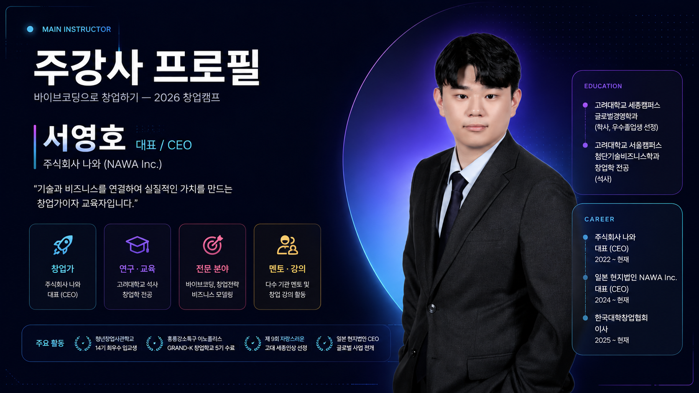
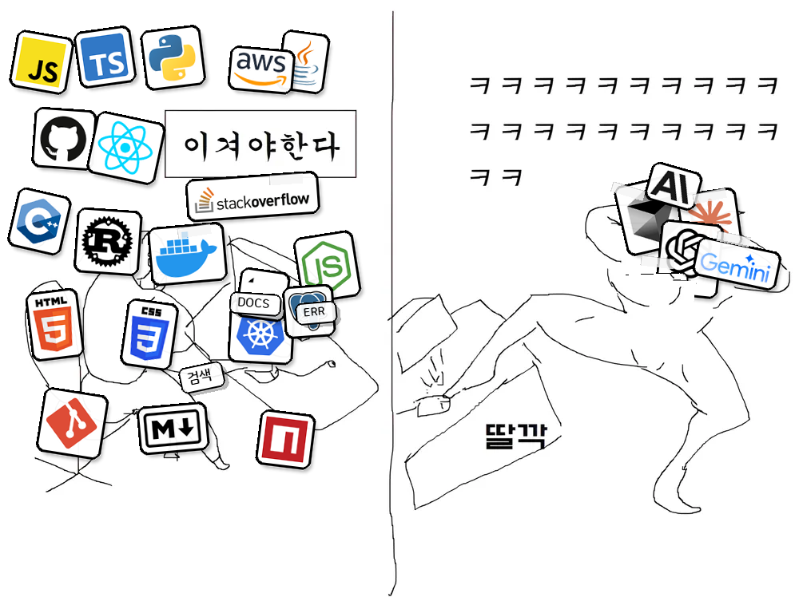
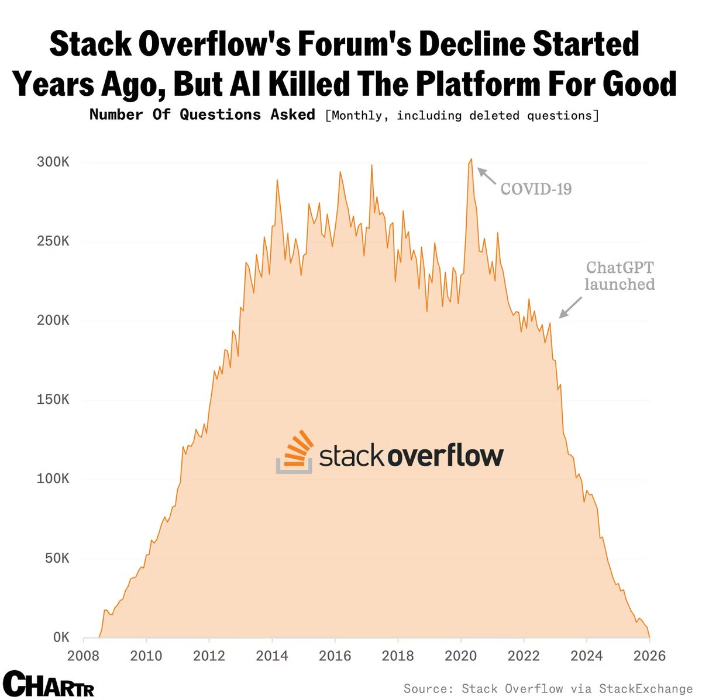

바이브코딩으로
앱 배포하기
코딩 경험이 없어도, 진짜 서비스를 만들고 배포까지
먼저, 오픈톡방에 들어오세요
오늘 공지·자료 공유·질문은 전부 이 톡방에서 — 막히면 여기에 캡처를 올리면 됩니다




검색의 시대에서, 대 딸깍의 시대로
예전엔 스택오버플로우를 뒤져 답을 "찾았다" — 이제는 AI에게 또렷이 요청하면 "만들어집니다"

"답을 검색하던 곳"이 비어가고 있습니다
개발자들의 Q&A 성지 스택오버플로우 — ChatGPT 등장 이후 질문 수가 급감했습니다

출처: Stack Overflow via StackExchange (Chartr)
"바이브코딩"이라는 새로운 방식
"많은 인력"보다 "또렷한 기획"의 시대로
소수 인원으로 운영되는 AI 기업 리더보드 — 지금 바로 열어보기
leanaileaderboard.com배출을 넘어, 실제 큰 매출을 내는 단계
"딸깍"되는 건 일부입니다
서비스 하나가 나오기까지 — 이 전체 흐름 중 자동화되는 건 개발 언저리뿐
개발이 요리라면, 기획은 레시피
좋은 재료(AI)가 있어도, 레시피가 엉성하면 음식은 망합니다
먹을 사람이 뭘 원하는지 먼저
무엇을·어떻게 — 오늘의 핵심
재료를 실제 음식으로 — 상당 부분 "딸깍"
만든 걸 알리고 쓰게 만들기
써보고 받은 피드백으로 다시 다듬기
AI에게 잘 말하는 법
"스터디 앱 만들어줘"(막연) → 또렷하게 쪼개서 요청하면 결과가 달라집니다
대상 사용자
핵심 기능
해결할 문제
구체적 구성
톤·분위기
이 강의를 위해, 진짜 앱을 만들었습니다
대진대학교 AI캠퍼스 · 홈 화면에 설치되는 PWA
이 앱은, 이렇게 만들었습니다
기획 → 개발 → 배포 → 데이터까지 — 똑같은 4단계로
오늘 쓸 도구 4종, 역할이 다릅니다
각자 맡은 일이 있어요 — 오후 실습에서 하나씩 직접 세팅합니다
아이디어를 또렷한 기획으로
ChatGPT · Claude
말로 시키면 코드로 — AI 코드 에디터
한 번에 인터넷에 올리기
데이터 저장 + 카카오 로그인
점심 식사
식사 후엔 직접 만들어 봅니다 — 각자 앱을 만들고 배포까지
이제, 캠프 앱에 다 같이 입장!
점심 전에 소개했던 그 앱입니다 — 오늘 만든 결과물은 여기에 올립니다

진행은 이렇게 — 같이, 천천히
한 번에 하나씩. 강사가 먼저 보여주고, 다 같이 따라합니다
강사가 화면으로 먼저 보여줍니다
각자 똑같이 — 막히면 손 드세요
자리로 찾아가 도와드립니다
먼저, 작업 도구를 깝니다
딱 3개만 — 이걸로 오늘 끝까지 갑니다
$ node -v
$ git --version
# 작업 폴더에서
$ git init
비어 있어도, 일단 배포부터
"완성하고 올리자"가 아니라 — 빈 앱을 먼저 인터넷에 띄워 둡니다
레시피부터 — 챗으로 기획 정리
오전에 배운 5요소를 챗 AI에 넣어 PRD(기획 문서)로 정리합니다
"이 느낌으로" — 레퍼런스로 지시
맨바닥에서 고민 말고, 마음에 드는 화면을 보여주고 따라 만들게 합니다
말로 시키면, 화면이 만들어집니다
Cursor에게 기능을 하나씩 요청 — 한 번에 하나씩
데이터를 담고, 카카오로 로그인
Supabase로 글·좋아요를 저장하고, 카카오 로그인을 붙입니다
직접 눌러보며, 하나씩 고치기
완벽 말고 동작 — 막히는 곳을 찾아 한 번에 하나씩 보완합니다
완성본을 다시 올리기
STEP 0에서 만든 주소에 — 이번엔 진짜 내용을 담아 재배포
내 앱에 진짜 주소 달기
vercel.app 대신 — 기억하기 쉬운 나만의 도메인
"이런 것도 붙일 수 있다"
오늘 앱엔 넣지 않지만 — 결제도 모듈을 붙이면 됩니다
간편결제 · 카드 — 국내 서비스에 많이 씁니다
여러 결제수단을 한 번에 연동
진짜 앱처럼, 홈 화면에 설치
스토어 없이도 — 브라우저에서 "홈 화면에 추가"하면 앱이 됩니다 (PWA)
내 앱을, 캠프 앱에 올리기
아침에 본 그 게시판으로 돌아옵니다 — 이제 여러분이 채울 차례
막히면, 이 순서로
에러는 당연합니다 — 당황 말고 차례대로
대부분 답이 거기 있습니다
"이 에러 고쳐줘" + 붙여넣기
직전에 잘 되던 상태로
화면을 찍어 올리면 같이 봅니다
AI를 쓰는 법도, 단계별로 "전직"합니다
오늘 여러분은 바이브코딩 단계로 1차 전직했습니다
반복이, 다음 단계를 엽니다
오늘 한 과정을 기억하고 반복하면 — 자동화 워크플로우, 그리고 오케스트레이션까지
무엇을 만들지 또렷하게 정리하는 능력은 남습니다